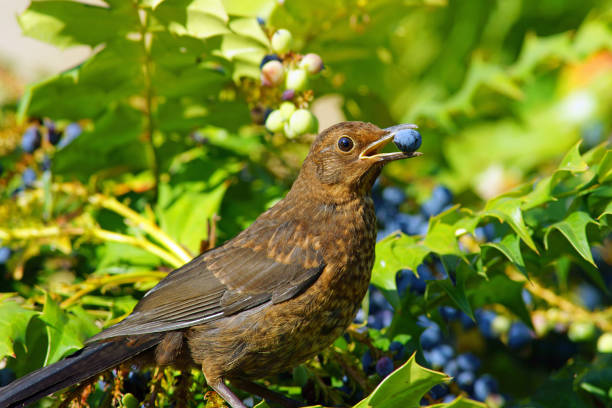

Arriba
Las aves son animales vertebrados, de sangre caliente, que caminan, saltan o se mantienen solo sobre las extremidades posteriores, mientras que las extremidades anteriores han evolucionado hasta convertirse en alas que, al igual que muchas otras características anatómicas únicas, les permiten, en la mayoría de los casos, volar, si bien no todas vuelan. Tienen el cuerpo cubierto de plumas y un pico sin dientes. Para reproducirse ponen huevos que incuban hasta su eclosión.
Las aves se originaron a partir de dinosaurios carnívoros bípedos del Jurásico, hace entre ciento cincuenta y doscientos millones de años y, de hecho, son los únicos dinosaurios que sobrevivieron a la extinción masiva producida al final del Mesozoico. Por tanto, la sangre caliente, que es la característica más notable que comparten con los mamíferos, es un resultado de evolución convergente, pues no hay un ancestro común a ambos grupos que tuviera este rasgo. Su evolución dio lugar, tras una fuerte radiación, a las más de diez mil especies actuales (más 153 extintas en tiempos históricos).Las aves son los tetrápodos más diversos; sin embargo, tienen una gran homogeneidad morfológica en comparación con los mamíferos. Las relaciones de parentesco de las familias de aves no siempre pueden definirse por morfología, pero con el análisis de ADN comenzaron a esclarecerse.
Las aves viven y crían en la mayoría de los hábitats terrestres y están presentes en todos los continentes, incluso en el territorio antártico.
Muchas especies de aves se han establecido en regiones donde han sido introducidas por el hombre. Algunas de estas introducciones han sido deliberadas; el faisán común, por ejemplo, ha sido introducido como especie para la caza. Otras introducciones han sido accidentales; este es el caso de varias especies de loros (no ibéricos).
A diferencia de la piel de los mamíferos, la de las aves es delgada y seca y no posee glándulas sudoríparas; de hecho, la única glándula cutánea de las aves es la glándula uropígea, situada en la base de la cola, que secreta grasa que el ave esparce por su plumaje con el pico; dicha glándula está especialmente desarrollada en las aves acuáticas, con lo que consiguen una mayor impermeabilización.
Las plumas son una característica única de las aves. Les permiten volar, proporcionan aislamiento térmico y son usadas para la exhibición, camuflaje, e identificación. Las plumas son formaciones epidérmicas de queratina unidas a la piel y surgen solo en series específicas de la piel llamadas pterilos. El aspecto de las plumas en el cuerpo, llamado plumaje, puede variar dentro de la especie por edad, posición social y sexo.
 La dieta de las aves incluye una gran cantidad de tipos de alimentos como néctar, frutas, plantas, semillas, carroña, y diversos animales pequeños, incluidas otras aves. Como las aves no tienen dientes, su aparato digestivo está adaptado para procesar alimentos sin masticar que el ave traga enteros.
Las aves llamadas generalistas son las que emplean muchas y diferentes estrategias para conseguir alimentos de una amplia variedad de tipos, mientras que las que se concentran en un espectro reducido de alimentos o tienen una única estrategia para conseguir comida son consideradas especialistas.
Las estrategias de alimentación de las aves varían según la especie. Algunas cazan insectos lanzándose sorpresivamente desde una rama. Las especies que se alimentan de néctar tienen lenguas pelosas y formas de pico especialmente adaptadas para ajustarse a las plantas de las que se alimentan. Las aves limícolas tienen largos picos que usan para sondear el suelo en busca de invertebrados; en el caso de las limícolas, sus picos presentan diferentes longitudes y curvaturas, ya que cada especie tiene un nicho ecológico diferente Los colimbos, patos buceadores, y álcidos persiguen a sus presas bajo el agua, usando sus alas y/o sus pies para propulsarse, mientras que los alcatraces, martines pescadores y charranes son predadores aéreos que se sumergen en picado en busca de su presa. Los flamencos, y algunos patos, se alimentan filtrando el agua. Otras aves, como los gansos y los patos nadadores, se alimentan principalmente pastando. Algunas especies, entre las que se incluyen las gaviotas, son cleptoparásitas, es decir, roban comida a otras aves. Se supone que con esto logran un suplemento adicional, pero no una parte importante de su dieta general. Hay otras aves que son carroñeras, algunas de las cuales, como los buitres, están especializados en comer cadáveres, mientras que otras, como las gaviotas, los córvidos o algunas aves de presa lo hacen solo como oportunistas.
En estos vídeos podemos apreciar a una Abubilla y el canto de un ruiseñor.